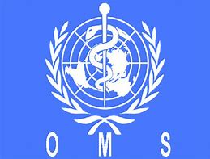

Somos un grupo dispuesto a detener el ciclo de contaminacion mundial, principalmente en la contaminacion hidrica
¿Qué es la contaminación?
La contaminación es la introducción de sustancias o elementos en un ambiente determinado con efectos negativos para los seres vivos relacionados con ese ambiente.
Generalmente hablamos de contaminación como el resultado de muchas de las actividades realizadas por el hombre (directa o indirectamente) las cuales no solo afectan a las sociedades humanas, sino también a muchas comunidades de organismos vivos.
Los efectos de la contaminación causada por los seres humanos no siempre son visibles para el hombre, pues muchas veces se observan en comunidades animales o vegetales ignoradas o desconocidas, algunas muy cerca de la civilización y otras completamente alejadas.
Aunque pueda parecer extraño, existen muchos tipos diferentes de contaminación, y lo más probable es que nosotros mismos no nos demos cuenta de que contaminamos nuestro ambiente con muchas de las cosas que hacemos diariamente y que nos permiten tener “una mejor calidad de vida”.
Contaminación del suelo y subsuelo
Este tiene que ver con la alteración de los suelos que albergan miles de organismos, las raíces de las plantas y más.
Puede ocurrir por elementos físicos, es decir, por la introducción de basura y/o desperdicios sólidos, así como por la infiltración de sustancias químicas que pueden tener efectos negativos para el crecimiento de las plantas o la proliferación de los microorganismos que habitan en el suelo.
contaminación atmosférica
Es la contaminación de la capa gaseosa de la tierra, por lo que involucra principalmente el aire que utilizamos para respirar durante el día, todos los días de nuestra vida.
La contaminación del aire tiene que ver con la acumulación en la atmósfera de gases tóxicos derivados de procesos industriales, de la combustión de hidrocarburos, etc. Esto tiene consecuencias directas para la salud de los que respiramos dicho aire, así como consecuencias indirectas para otros organismos que habitan en la tierra.
Contaminacion hidrica
Con el término contaminación hídrica nos referimos a la contaminación del agua. Esta contaminación puede ocurrir a diferentes niveles, ya que puede ocurrir en:
– El agua de los ríos, lagos y lagunas
– El agua de los mares y océanos
– El agua subterránea
La contaminación del agua es uno de los tipos de contaminación más dramáticos e importantes para la humanidad, ya que no solo pone en riesgo la vida de los animales y cultivos de los que nos alimentamos, sino que nos pone en riesgo a nosotros mismos.
Contaminacion hidrica
Despues de investigar mas a detalle, decidimos hablar sobre la contaminacion hidrica, pero, ¿Qué es?.
De acuerdo a la definición que da la OMS (Organización Mundial de la Salud), el agua está contaminada cuando su composición se haya alterado y modifiquen tantas las propiedades físicas, como así también químicas y biológicas de la misma, de modo que no reúna las condiciones necesarias para ser utilizada beneficiosamente en el consumo del hombre y de los animales. Como así mismo los cambios de temperatura provocados por emisiones de agua calientes (polución térmica). A decir verdad, siempre existe una contaminación natural originada por restos animales y vegetales y por minerales y sustancias gaseosas que se disuelven cuando los cuerpos de agua atraviesan los diferentes terrenos de nivelación Los materiales orgánicos, mediante procesos biológicos naturales de biodegradación en los que intervienen descomponedores acuáticos (bacterias y hongos), son degradados a sustancias más sencillos. En estos procesos será fundamental la cantidad de oxígeno disuelto en el agua por que los descomponedores lo necesitan para vivir y para reproducir la biodegradación. Pero de otro lado, el ser humano influye mucho en la contaminacion hidrica al desechar plasticos, petroleo o algun otro compuesto que pueda afectar a la vida maritima.
Fuentes puntuales
Se preguntaran ¿Qué son las Fuentes puntuales?, pues estas son contaminantes en localizaciones específicas a través de tuberías y alcantarillas. Ej: Fábricas, plantas de tratamiento de aguas negras, minas, pozos petroleros, etc.
Fuentes no puntuales
Las fuentes no puntuales son grandes áreas de terreno que descargan contaminantes al agua sobre una región extensa. Ej: Vertimiento de sustancias químicas, tierras de cultivo, lotes para pastar ganado, construcciones, tanques sépticos
La OMS ha establecido, también, los límites máximos para la presencia de sustancias nocivas en el agua con destino de consumo humana(Concentración máxima MG/L)
-Sales Totales…………….2000
-Cloruros………….600
-Sulfatos………..300
-Nitratos………45 6
-Nitritos…….. No debe contener
-Amoniaco………..0,5
-Mat. Orgánico………3
-Calcio………80
-Magnesio………….50
-Arsénicos…………0,05
-Cadmio………….0,01
-Cianuros…………0.05
-Plomo…………0,1
-Mercurio………..0,001
-Selenio………..0,01
-Hidrocarburos Aromáticos plociclicos……0,0002 -Biosidas.

¿Quienes somos?
Somos aun un pequeño grupo que quiere ayudar a que nuestro planeta sea cuidado y respetado, tal y como se lo merece.
Cuales son nuestros objetivos?
Queremos que la poblacion tome conciencia sobre los riesgos de la contaminacion del agua, e implementar mecanismos reales y posibles de soluciones ambientales a las problematicas detectadas.
¿Que hemos hecho?
Luego de tener en cuenta todo lo necesario para comenzar nuestra proyecto, lo que hicimos fue dividir nuestro grupo para realizar diversas tareas, como por ejemplo: Reconocer las diferentes zonas del arroyo y tomar muestras de acuerdo al protocolo. Organizar charlas con profesionales del área de medioambiente de la localidad. Realizar encuestas a ciudadanos, para contar con una visión crítica del problema de la contaminación del agua.
¿Que necesitamos?
Necesitamos obtener colecta de dinero para la compra de material para laboratorios, para asi poder realizar análisis simples de muestras a través de microscopios probetas y otros elementos, una colecta para pagar los costos de análisis, filmación del proceso del proyecto, organización de charlas con padres y alumnos de todos los niveles , elaboración de carpeta de carpeta de campo, informa y material de apoyo audiovisual sobre nuevas tecnologías para el cuidado y tratamiento del agua.
¿Te nos unes a la causa?
Aun somos un grupo pequeño, pero en esta web, que estaremos actualizando para mejor visualizacion, el apartado de donaciones y todo eso.
Queremos crear una gran comunidad que sea conciente del mal hecho por la contaminacion.
¿estas dispuesto a unirte a nosotros?